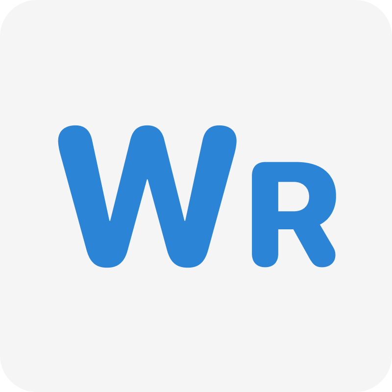

Hola, soy Íker.
Desarrollador de Aplicaciones y Páginas Web.
Actualmente estudiante de 1º DAM en el IES Paco Mollá, apasionado por crear experiencias digitales creativas, dinámicas e innovadoras.
Ver mis proyectosProyectos Destacados

WeResume
App nativa de macOS diseñada para generar audio-resúmenes de temas de YouTube mediante inteligencia artificial. Extrae transcripciones de vídeos con la YouTube Data API y las procesa usando el modelo Gemini IA, todo empaquetado en una discreta app de la barra de menú.
- SwiftUI
- macOS App
- Gemini AI
- YouTube API
DungeonMaker
Aplicación web pensada para Dungeon Masters y entusiastas del rol que quieran forjar aventuras de Dungeons & Dragons en segundos. A partir de temas, personajes, villanos y ambientación, genera narrativas coherentes en streaming usando los modelos de OpenAI, todo desde el navegador y sin backend.
- HTML5 & CSS3
- JavaScript Vanilla
- OpenAI API
- Streaming UI
Sobre Mí & Habilidades
Soy un desarrollador en formación con un gran interés en crear aplicaciones elegantes y funcionales. Disfruto enfrentando retos técnicos y transformando ideas en código limpio y atractivo.
Hablemos
¿Tienes una idea en mente o quieres colaborar? Me encantaría conectar contigo.
Enviar mensaje